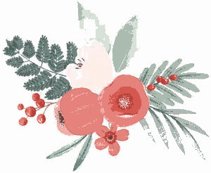
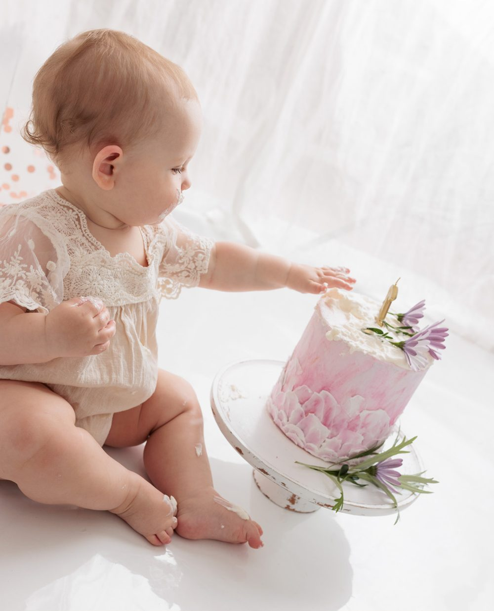
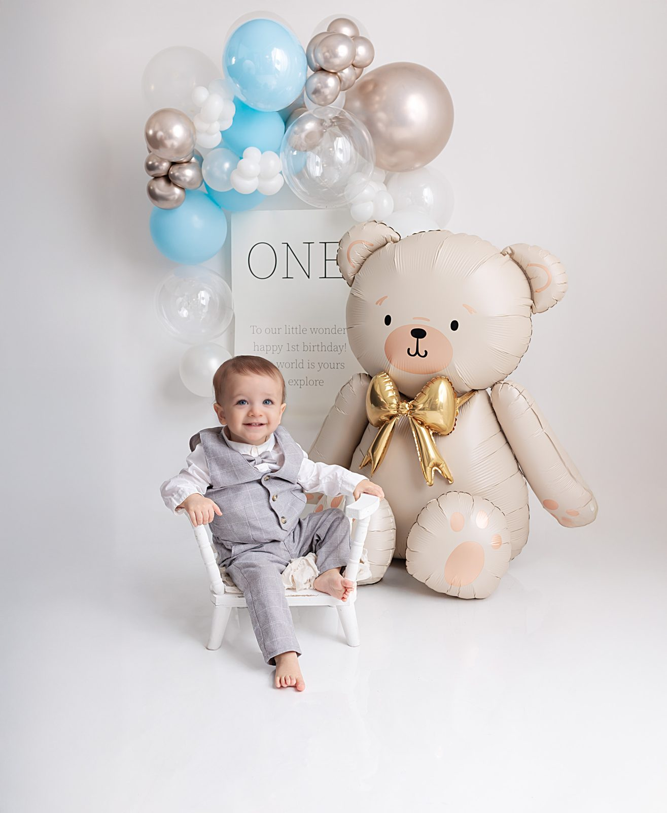

Smash the Cake, 1-årsbilder, newborn, syskon och familj. Fotograferat i vår studio i Sundbyberg.

Smash the Cake hos Karusell! Kan det vara den roligaste fotograferingen som finns? Ja, vi tror det.
Vi hjälper gärna er att få härliga, vackra bilder på er 1-åring, med rekvisita och bakgrund som är något utöver det vanliga.
Jag heter Anneli Nygren och fotograferar newborn, sitter, 1-åringar, syskon och familjer.


Karusell har flerårig erfarenhet av att fotografera just 1-åringar, och studion är helt anpassad efter det.
Ballonger, bänkar, plädar, filtar, leksaker, gunghäst, badkar och mycket mer. Allt som gör att era bilder blir vackra och speciella.
Vill du låna kläder går det fint. Ungefär 70 % av kläderna du ser här och på Instagram är Karusells lånekläder.
Marieborgsgatan 2 i Sundbyberg (Stora Ursvik). Bussen stannar vid Backstugevägen, precis utanför.
Javisst. Ungefär 70 % av kläderna du ser här och på Instagram är Karusells lånekläder.
Det enklaste är att skicka ett DM på Instagram, @karusell_foto. Jag svarar oftast snabbt och återkommer med mer info, till exempel priser.
Skicka ett mejl till hej@karusellfotografi.se. Får du inget svar inom ett dygn, kika i skräpposten.
Marieborgsgatan 2, 174 62 Sundbyberg (Stora Ursvik). Busshållplats: Backstugevägen.
Hör gärna av dig via Instagram DM, eller ring och mejla.
Väl mött! / Anneli